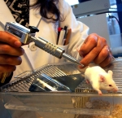

“El amor es el cliché por excelencia”, le comenté a mi amiga entre sorbos de cafeína; ella se ofendió. Todavía no me habla. No niego que sea mi culpa pues ya me lo había advertido, le disgusta que intente diseccionar a Cupido, una acción que, para colmos, provoca cierto placer en mí. Pero ella es parte del cliché (yo también lo soy, aunque intente esconderme) porque lo promueve, es romántica-obsesiva y vive enamorada del amor; en mi opinión, una seria enfermedad.
Durante nuestra conversación, la emisora de radio en función tocó 19 canciones (las conté), todas sobre estar o no enamorado; mi interlocutora, por su parte, estuvo más de 40 minutos hablándome sobre su actual relación, cuyas fases puedo encajar en cada una de las canciones escuchadas. De hecho, todas mis relaciones encajan también, perfectamente, en aquellos temas; cuando hablan del penetrante sentimiento inicial e irracional, de las promesas de amor eterno (vaya oxímoron), el amor que muere con los años, la traición, el corazón roto y la subsiguiente soledad.
Y salgo de aquel café para enfrentarlo en las noticias, en las historias que cuentan los libros, en las películas a mi alrededor. Por eso, cada vez que soy alcanzada por una de esas flechas que lanza el gordito alado, trato de analizarla, de comprimirla en una placa petri y observarla detalladamente, descuartizarla, a ver si concibo un poco su inagotable poder.
Palabras para nada románticas surgen de mis exploraciones: dopamina, norepinefrina, serotonina, oxitocina, vasopresina. Términos que Borges jamás admitiría en las abstracciones de sus poemas, mucho menos Emily Dickinson. Sin embargo, desde que Darwin cambió al mundo con sus ideas, conocemos mejor el origen de ese dominio que ejerce el amor sobre los animales (sólo hay que ver a un perro tras una hembra en calor) y sabemos también la importancia del impulso. La evolución delinea el camino del sexo como forma de reproducción a través de la selección sexual que, junto a la natural, conforman los pilares de este fascinante desarrollo sobre el planeta. Durante millones de años, la vida ha intentado perfeccionar esta selección sexual con el objetivo de perpetuar genes. Nuestras culturas, junto a los creativos cerebros sapiens, se han encargado de lo demás.
En todo el reino animal observamos conductas similares que difieren en grados y estrategias. Monógamos, polígamos, poliandras y homosexuales, madres que cuidan la cría, padres que esparcen sus genes, padres que custodian los retoños, madres que propagan sus genomas, es cuestión de quién invierte más energía. En algunas ocasiones, se llega a un acuerdo para equilibrar el trabajo, pero más de una pareja sapiens puede atestiguar que estos acuerdos son más difíciles de alcanzar que firmas para el tratado de Kyoto.
En la edición del 8 de enero del 2009 del diario Nature, el neurocientífico Larry Young publicó un reportaje titulado Human Beings: Love, Neuroscience says it all, algo así como “Seres humanos: el amor, la neurociencia lo cuenta todo”. En el artículo, Young cita estudios que abarcan desde estrategias de apareamiento en distintos animales hasta las acciones delimitadas de las hormonas del amor en los seres humanos: la oxitocina en la mujer y la vasopresina en el hombre. No es mi intención en esta columna explicar sus funciones, más bien deseo concentrarme en uno de los objetivos de Young al elaborar el artículo. El neurocientífico asegura que mediante la manipulación de las hormonas (claro que habría que manejar muchas otras variables) será posible producir pociones para despertar el amor en las personas. Pero creo que al amor hay que controlarlo, no despertarlo. Más despierto y nos devora a todos. Por eso me identifiqué al leer a John Tierney en The New York Times (http://www.nytimes.com/2009/01/13/science/13tier.html?ref=science) quien habló con Young y le preguntó si era posible producir una vacuna contra el amor, para él, una opción más racional. El neurocientífico estuvo de acuerdo en que existe esa posibilidad.
A lo mejor sería una forma de erradicar los estúpidos crímenes pasionales, los peligrosos celos y los inevitables deseos de posesión. Ningún joven se creería Romeo ni Julieta para morir por una emoción que, aunque intensa y placentera puede ser, además, pasajera. Imagino días sin tiempo perdido en reproches, odio y culpabilidad. Al manipular el amor, no nos enamoraríamos de quien no nos ama ni de la pareja no “indicada”; la media naranja sería aquella con quien elijas tomarte la poción, y ese otro amor que te hace sufrir y te desespera, pues contra ese te vacunas y punto.
Imagino la dulce ausencia del constante drama del amante traicionado, los pocos divorcios serían arreglados con medicamentos, las pasiones serían siempre reciprocadas y los que juran al celibato sólo tendrían que tomar sus medicamentos para nunca más romper sus votos. Un lugar donde las tentaciones más primitivas son manipuladas con drogas, manteniéndonos así en el camino de la razón. Allí, Humbert estaría vacunado contra Lolita.
¿Un mundo sin poesía ni musas? No necesariamente, aunque los temas serían distintos y las musas leales; evidentemente, los ciudadanos del futuro no entenderán la mayor parte de nuestra literatura, guerras, reinados, composiciones musicales, filmes ni otras representaciones de nuestra sociedad actual, como miles de programas de televisión.

Se podría argumentar que sería un mundo aburrido pero sólo porque es muy diferente al que vivimos, por lo tanto, difícil de concebir. Ahora que las investigaciones sugieren que la cultura y la tecnología están interviniendo en los cambios evolutivos de nuestra especie, pienso que también del planeta y de todos sus habitantes, no debe sorprendernos que lleguemos a controlar esos mecanismos naturales que nos trajeron hasta aquí, precisamente para poder sobrevivir.
Pero no le cuento nada de esto a mi amiga, así como no me gusta recordarle que soy atea, saber eso de mí la mortifica, mis ideas mueven los cimientos donde basa su identidad y yo lo entiendo, aunque no me identifique. Desafortunadamente, con ella, como con muchos otros, ese entendimiento no camina sobre una avenida de doble vía.
Los estudios de Helen Fisher
La evolución del gordito alado

“El amor nos aleja de los demás”, escribió una vez Virginia Woolf . Ciertamente, este impulso domina varias funciones cerebrales; importantes acciones e ideas (tanto destructivas como constructivas) han sido impulsadas por el dolor de un amor no correspondido o “imposible”. La antropóloga de la Universidad Rutgers, Helen Fisher, lo ha estudiado minuciosamente. En su libro El contrato sexual, intenta comprender su evolución, comenzando con Driopitecus y el esencial paso de abandonar las lianas para caminar erguidos sobre el suelo. Para la mujer, esto inició un cambio biológico que transformaría el parto y las necesidades de la hembra en cuanto al cuidado del bebé, eventos que desencadenarían la primera de varias revoluciones sexuales de nuestra especie.
En los últimos años, Fisher mudó su investigación de la antropología a la neurología y ejecutó un amplio estudio que involucró a voluntarios de ambos sexos (enamorados o con el corazón roto), varias encuestas y una máquina de resonancia magnética funcional (fMRI). En su libro Por qué amamos, la antropóloga examina los resultados. Notablemente, algo era cierto para todos los participantes, los sentimientos descritos y la actividad cerebral eran las mismas para cada una de estas personas. De hecho, Fisher ha sido una de las primeras en observar que el amor y el odio comparten algunos circuitos cerebrales. En un estudio reciente que publicamos aquí en Sin Dioses, otro equipo de científicos detalla estas observaciones.
Nuestras culturas colocan la cereza sobre el enmarañado postre. Entre las muchas visiones sobre el sexo que he leído, estas dos presentan conductas completamente contrarias. Los Indios Cayapa son los más reprimidos sexualmente en todo el mundo, los hombres ven la vagina como un animal caníbal con dientes afilados y los matrimonios son coordinados entre familias (no por “odontólogos en ginecología”, mi primera propuesta). Por otro lado, en las islas Ulithi se promueve el sexo a diario y sus festivales fomentan la infidelidad y el cambio de parejas. Mi amiga, por el contrario, basa su amor en una caribeña combinación de los cuentos de hadas occidentales, las telenovelas mexicanas y el cine en general.
Creo que una vacuna contra el amor está aún muy lejos de ser producida, mucho menos perfeccionada, pero también pienso que como sociedad, nos beneficiaríamos considerablemente con esa opción.
Volver al índice de la Lupa Herética
© 2008-2023 Glenys Álvarez y Sin Dioses. Prohibida la reproducción con fines comerciales.
Comentarios
Comments powered by Disqus